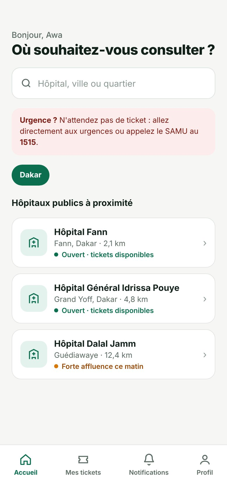
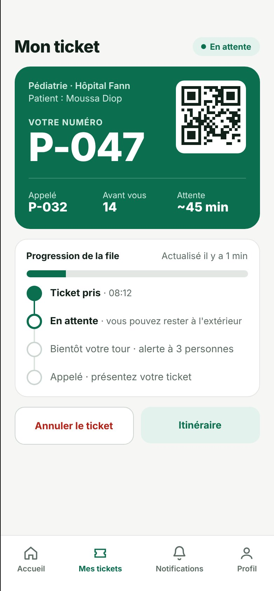
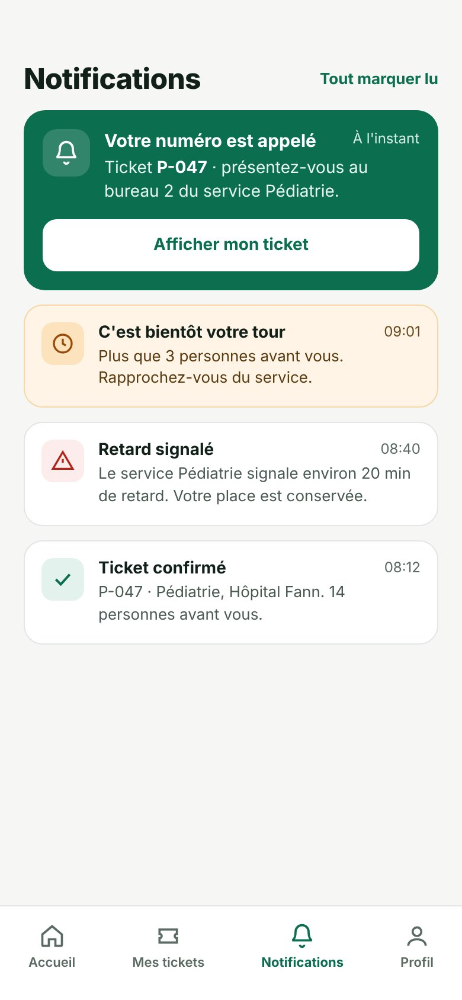

Projet scolaire · Semaine de l'entrepreneuriat · ISM Dakar
Une application mobile pour prendre un ticket et suivre la file d'attente dans les hôpitaux publics du Sénégal, sans attendre des heures sur place.



Dans les hôpitaux publics, les patients arrivent très tôt et attendent des heures sans savoir quand ils passeront.
Un ticket pris depuis le téléphone, une file suivie en temps réel et une alerte quand c'est bientôt son tour.
Projet d'équipe réalisé pendant la Semaine de l'entrepreneuriat à l'ISM, présenté pour le Startup Challenge. J'étais en charge de la partie technique : solution et prototype.
Les captures ci-dessus viennent de la maquette ; les files, numéros et temps d'attente sont des exemples.